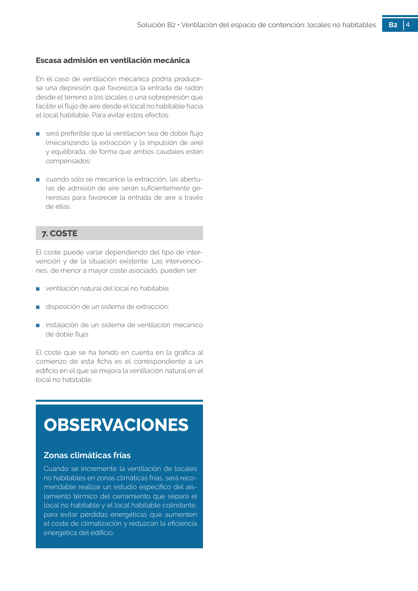

GUIA · Página 4 · versión sin-fecha
SHA256: fe1b00892005f79029b9e9d5df6240a937500736190000346886ae25571234a6 · página física 4 de 5 · métodos de encabezado
solo si están cotejados.
Formatos: Markdown · JSON de bloques · PDF p. 4 · imagen PNG
4 Solución B2 • Ventilación del espacio de contención: locales no habitables B2 4 Escasa admisión en ventilación mecánica En el caso de ventilación mecánica podría producir se una depresión que favorezca la entrada de radón desde el terreno a los locales o una sobrepresión que facilite el flujo de aire desde el local no habitable hacia el local habitable. Para evitar estos efectos: ■ será preferible que la ventilación sea de doble flujo (mecanizando la extracción y la impulsión de aire) y equilibrada, de forma que ambos caudales estén compensados; ■ cuando sólo se mecanice la extracción, las abertu ras de admisión de aire serán suficientemente ge nerosas para favorecer la entrada de aire a través de ellas. 7. COSTE El coste puede variar dependiendo del tipo de inter vención y de la situación existente. Las intervencio nes, de menor a mayor coste asociado, pueden ser: ■ ventilación natural del local no habitable; ■ disposición de un sistema de extracción; ■ instalación de un sistema de ventilación mecánico de doble flujo. El coste que se ha tenido en cuenta en la gráfica al comienzo de esta ficha es el correspondiente a un edificio en el que se mejora la ventilación natural en el local no habitable. OBSERVACIONES Zonas climáticas frías Cuando se incremente la ventilación de locales no habitables en zonas climáticas frías, será reco mendable realizar un estudio específico del ais lamiento térmico del cerramiento que separa el local no habitable y el local habitable colindante, para evitar pérdidas energéticas que aumenten el coste de climatización y reduzcan la eficiencia energética del edificio.
